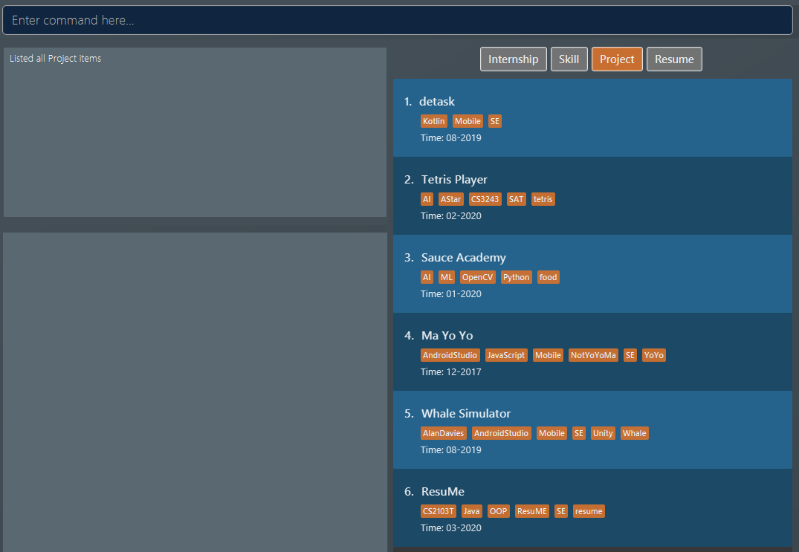
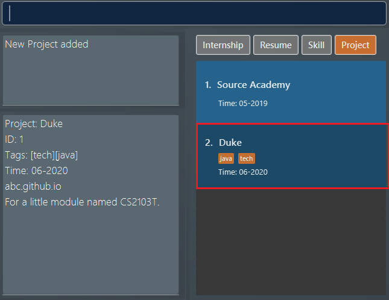
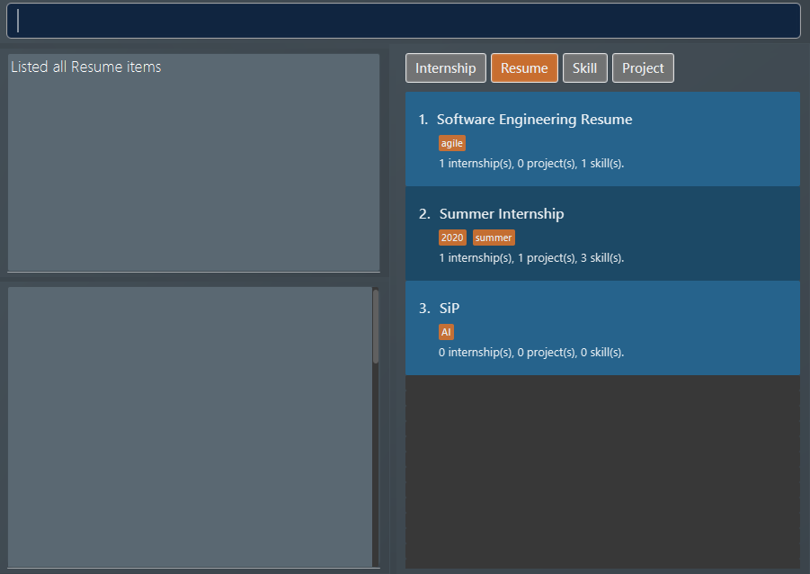
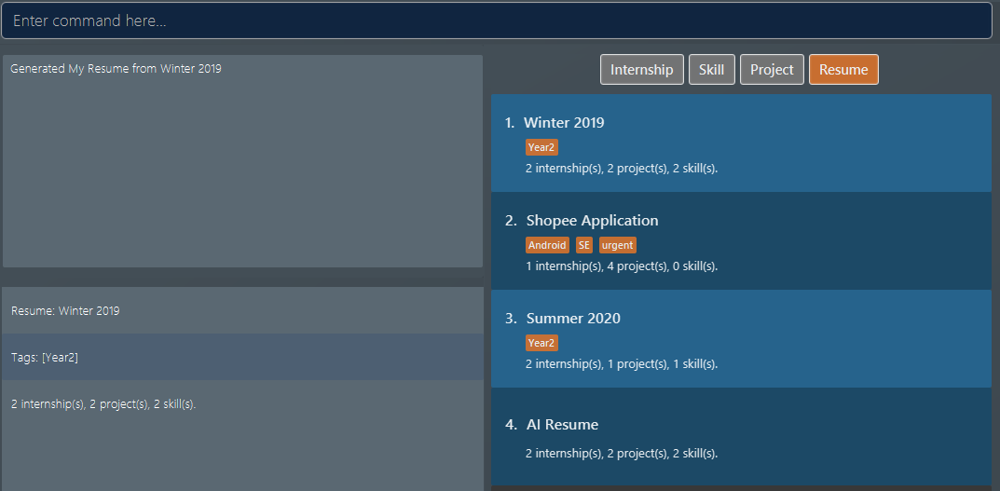
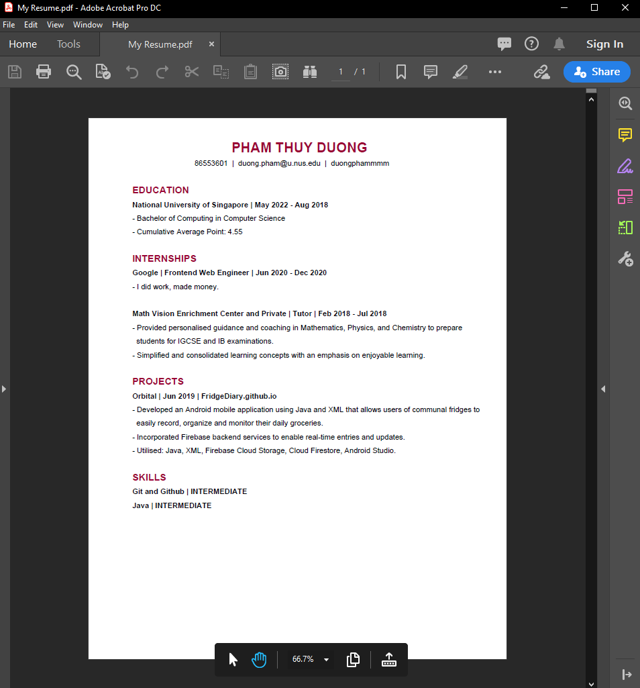
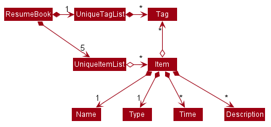

Overview
ResuMe is a desktop application for you to manage all of your resumes from a centralised location. It is easy to build, customise and export different resume versions using only Command Line Interface.
Summary of contributions
Enhancement implemented
-
Major enhancement: added the ability to generate a
.pdffile from an existing resume-
What it does: allows users to export their resume to a well-formatted and printable
.pdfversion, which could be directly submitted to their potential employer. -
Justification: This feature improves the product significantly because users do not need to spend time on manually formatting the final product, making it much more efficient and convenient to create new usable resume using the application.
-
Highlights: This enhancement involves an external library that supports building a
.pdffile using Java. It was challenging as it requires a steep learning curve in order to integrate the library into our application, while keeping in mind of both our design consideration and existing architecture. -
Credits:
Apache Pdf Box(#142)
-
-
Minor enhancement:
to add: view [#101]
-
Minor enhancement: added more details to
helpcommand, where user can either view a summary of all commands, or aGetting Startedguideline.
Contributions to team-based tasks:
-
Refactored codebase for
Modelcomponent from AddressBook Level 3 to support application’s specific item types:Internship,Project,SkillandResumewith their respective fields, such asTime,WebsiteorLevel(#66, #73, #75) -
Wrote additional tests for existing features to increase coverage (#136, #187, #236, #253, #254)
Contributions to the User Guide
Given below are sections I contributed to the User Guide. They showcase my ability to write documentation targeting end-users. |
About this guide
Our aim when writing this document is to help you - a new user - get started with ResuMe as quickly as possible. The guide features all the available commands, their syntax, as well as specific examples for illustration.
This section is, well… a guide on how to use this guide :) We will be explaining some of the symbols and formatting used, key terms, as well notes and tips for a better user experience.
Symbols and Formatting
Most of us are visual learners, and we figured, what is a better way to present information than using some shapes and colours?
| Symbol / Format | Explanation |
|---|---|
Important information to take note |
|
Tips |
|
Warnings on potential misuse |
|
|
Keywords representing an |
Key terms
You will come across these little guys a lot in this document, so let’s get to know them first!
| Term | Explanation |
|---|---|
|
Consisting of five different types: |
|
An item stored in the application, which could be any one of the five types above |
|
A line of text that you could type into the command box and execute |
|
Specific information about an |
|
The position of the |
Viewing help : help
Lists out the function and usage of each command.
Format: help OPTION
There are two possible help options that you can choose from, as shown in the table below:
| Option | Format | Result |
|---|---|---|
command |
|
Opens a pop-up window with a summary of available commands, their syntax and usages. |
start |
|
Opens a pop-up window with detailed guide on how to get started. |
These are screenshots of the two pop-up windows:
Adding an item: add
Adds an item to the ResuMe application.
Format: add i/ TYPE n/ NAME [ATTRIBUTE/ VALUE]… [#/ TAG]…
The specific command syntax could be found in the table below:
| Type | Format |
|---|---|
Internship |
|
Project |
|
Skill |
|
Resume |
|
Note |
|
|
The description of an item could be written in one paragraph (with full stop and a space after each sentence).
These sentences, when exported to .pdf format, will be automatically shown as individual bullet points!
(refer to rgen for more details)
|
Example: Try typing in the command box these two commands one by one!
-
list i/ proj -
add i/ proj n/ Duke t/ 06-2020 w/ abc.github.io d/ For a little module named CS2103T. #/ java #/ tech
Outcome:
-
All
projectitems are listed in the list box. -
A new
projectitem namedDukewith the specified fields is added. This item is automatically reflected in the list box.
Generating a resume: rgen
Generates a .pdf file from an existing resume stored inside the application at the specified index.
Format: rgen INDEX [n/ FILE_NAME]
-
A valid
INDEXis a positive integer that identifies an existingresume. -
The exported
.pdffile will be located in the same folder as the application.jarfile.
It is optional to specify a FILE_NAME for the .pdf file.
If no name is specified, the filename will be set, by default, to the name of the generated Resume.
|
Example: Let’s try out the following commands!
-
list i/ res -
rgen 1 n/ My Resume
Outcome:
-
The first command lists out all
resumes. Assuming that you want to generate the firstresumein the list box. -
The second command generates a
My Resume.pdffile from the specified resume. The screenshots of what happened are as below:
Contributions to the Developer Guide
Given below are sections I contributed to the Developer Guide. They showcase my ability to write technical documentation and the technical depth of my contributions to the project. |
Model component
API : Model.java
The Model,
-
stores a
UserPrefobject that represents the user’s preferences. -
stores the Resume Book data.
-
stores the Resume Book state using
VersionedResumeBookto facilitateundo/redo. -
exposes an
Observablethat contains an internalPersonwith user’s data, and two unmodifiableObservableList<Item>, one forNoteand one forInternship,Project,SkillandResume. -
has the UI bound to its observables so that the UI automatically updates when the data change.
-
does not depend on any of the other three components.
As a more OOP model, we can store a Tag list in ResumeBook, which Item can reference. This would allow ResumeBook to only require one Tag object per unique Tag, instead of each Item needing their own Tag object. An example of how such a model may look like is given below. |
Export Feature
The Export Feature supports two main actions: previewing the content of a Resume item, and
then generating a .pdf file from it.
Previewing a resume: rpreview
Implementation
rpreview is supported by the new Command, ResumePreviewCommand and the additional method toPreview() implemented
in Internship, Project and Skill, which return the content of the item in textual format.
Given below is an example usage scenario:
Step 1. The user launches the ResuMe application. After loading data from storage to the application memory, the list of
resumes in the ResumeBook could either contain some resumes, or is empty.
Step 2. The user executes rpreview INDEX. If the specified resume INDEX is out of bound, ResuMe throws an error message.
Step 3. The application retrieves the correct Resume item and calls toPreview() on the items contained in that resume.
The following activity diagram summarises what happens when a user executes rpreview command:
Aspect: Where rpreview is displayed
-
Alternative 1 (current choice): Displays in a separate preview pop-up window.
-
Pros: The preview is separated from the application and does not clutter the application view. It is also no longer confined to a small space and hence improves readability.
-
Cons: Additional non-command-line action needed to close the pop-up window after previewing.
-
-
Alternative 2: Display in the same panel as
view-
Pros: No significant change to UI component.
-
Cons: Multiple commands needed if user finds out about a typo in an item, wants to view the item in details, fix the typo and then check the preview again to ensure there is no more error.
-
-
Alternative 3: Create a separate preview box to display the resume preview. Additionally, this box could be implemented such that it automatically updates when the content of the
Resumeitem is edited.-
Pros: User can see the resume preview in the preview box, and the item details in the view box at the same time, hence saving time switching between views.
-
Cons: Too many panels could be confusing for the user to navigate. The space is also often wasted since user does not need to use
rpreviewregularly.
-
Generating a .pdf file from a resume: rgen
Implementation
This feature utilises the external Apache Pdf Box library. When using rgen, the user could specify the desired name of
the generated file, which will be saved in the root directory of the project.
The executing of rgen is facilitated by an addition PdfBuilder class, which implements the following main operations:
-
addPage()- starts a new page in the.pdffile. This method is called dynamically to fit the content of the resume to be generated. -
addPersonalDetails()- adds the relevant resume and user details to the.pdffile. -
addInternships(),addProjects()andaddSkills()- adds the resume content to the.pdffile in the same order that they appear in the resume. If a section is empty, it will not be added to the output file.
Given below is an example usage scenario:
Step 1. The user launches ResuMe. After loading data from storage to the application memory, the list of resumes in the
ResumeBook could either contain some resumes, or is empty.
Step 2. The user executes rgen INDEX n/ FILE_NAME. If the specified resume INDEX is out of bound, ResuMe throws an error message.
Step 3. The application retrieves the correct Resume item, create a new .pdf file and populates it with the corresponding
items inside the Resume.
The following activity diagram summarises what happens when a user executes rgen command:
Detailed steps are shown in the sequence diagram below:
Design Considerations
Aspect: How rgen executes
-
Alternative 1 (current choice): Generate
.pdffile by iteratively addingitemscontained inresume.-
Pros: Better control of the output layout, as the position and formatting of each section could be set individually. Additionaly,
rgenis dynamic, in the sense that even without callingrpreviewevery time, the generated file will be consistent with any item update. -
Cons: Coupled with
rpreview, the content of aResumemust be read twice every time the user wishes to export.
-
-
Alternative 2: Generate
.pdffile directly from the previewed text output byrpreview-
Pros: Faster and simpler
rgen -
Cons: Limited formatting options (font type, font size and page layout) since the whole document is now input as one long string of text.
rgenimplemented this way is also static, and might not reflect the most updated content if there are item changes afterrpreviewis called.
-